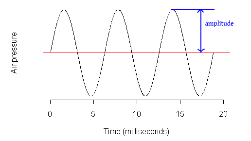

Making Waves
Digital Signal Processing In the browser
Dave Justice
@meandave2020
@meandavejustice
Digital Signal Processing
The use of mathematics to modify an information signal.
Get Data
- Get data about the signal (get amplitude peaks from audio signal)
- Get data about the environment of the signal (sonar/radar)
Modify Signal
- Output a modified version of the signal (reverb effect pedal)
- Produce a new signal (sythesize speech from text signal)
Sinusoid
(just a sine wave)
Amplitude
(Loudness over time)
Magnitude
(amplitude, minus the negative values)
Frequency
Rate of repetition of events over time.
Fourier Series
Any waveform is just a sum of sine waves.
Time Domain
A graph of samples over time.
Frequency Domain
Graph of magnitude of frequencies.
Discrete Fourier Transform
converts time-domain samples into frequency domain data.

Web Audio API
Native browser api for synthesizing, modifying, and scheduling sounds.
High level usage
function playNote(frequency) {
// create our audioContext (generally one per page)
var audioContext = new window.AudioContext();
var oscNode = audioContext.createOscillator();
var gainNode = audioContext.createGain();
gainNode.gain.value = 1; // between 0 and 1
oscNode.type = 'triangle'; // shape of wave
oscNode.frequency.value = frequency; // rate to oscillate, higher raises pitch
oscNode.connect(gain); // connect to gain node, so we can control amplitude(volume)
gainNode.connect(audioContext.destination); // connect to speakers
oscNode.start(); // play it!x
}
playNote(440);
Audio Graph
Chain of nodes by which your audio signal passes through
firefox's web audio editorAnalyser Node
Runs a FFT over our signal allowing us to get data in the time or frequency domain.
// just another node in our audio graph...
var oscNode = audioContext.createOscillator();
var analyserNode = audioContext.createAnalyser();
var procNode = audioContext.createScriptProcessor(256, 1, 1);
var data = new Uint8Array(analyserNode.frequencyBinCount);
analyserNode.connect(procNode);
procNode.onaudioprocess = function() {
analyserNode.getByteFrequencyData(data); // fills our array with data
// loop over data and draw to our canvas element
}
analyserNode.connect(oscNode);
procNode.connect(oscNode);
oscNode.start();
Script Processor Node
Allows us to process audio in real time
- 'onaudioprocess' event
- runs in main thread
- Hard to reuse
Visualizing our signal in 2d
Time Domain
Frequency Domain
WAVEFORM (time domain)
Audio Worker
WebWorker with an audioContext
- Similiar to webworker
- Runs in it's own process
- Replaces scriptProcessorNode
- Create your own custom Nodes!
- Runs YOUR JavaScript
- More possibilities for DSP!
Bitcrusher
var bitcrusherNode = new AudioWorkerNode(ctx, "bitcrusher-worker.js", 1, 1);
bitcrusherNode.addParameter("bits", 8);
bitcrusherNode.addParameter("frequencyReduction", 0.5);
// bitcrusher-worker.js
onaudioprocess= function (e) {
for (var channel=0; channel<e.inputBuffers.length; channel++) {
var inputBuffer = e.inputBuffers[channel];
var outputBuffer = e.outputBuffers[channel];
...
// blah blah blah process my buffer
outputBuffer[i] = lastDataValue;
}
}
};
Bitcrusher Node
using the shim, mohayonao/audio-worker-nodeUse audio workers
- Doesn't run in the main thread.
- code is more reusable
- publish tons of effects on NPM!
- Can shim today